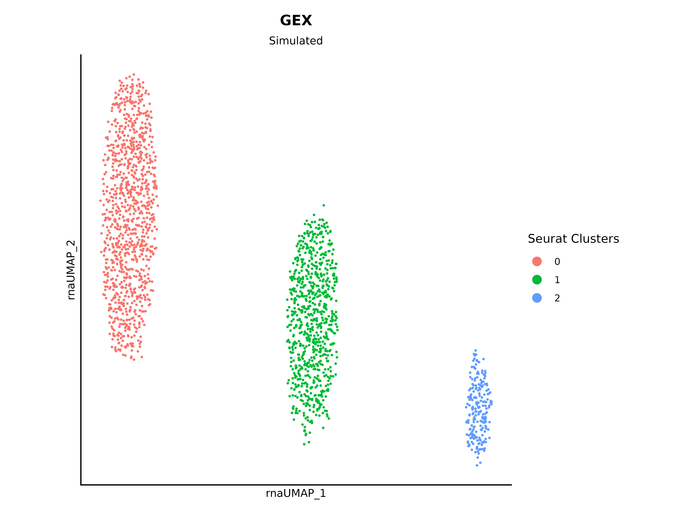
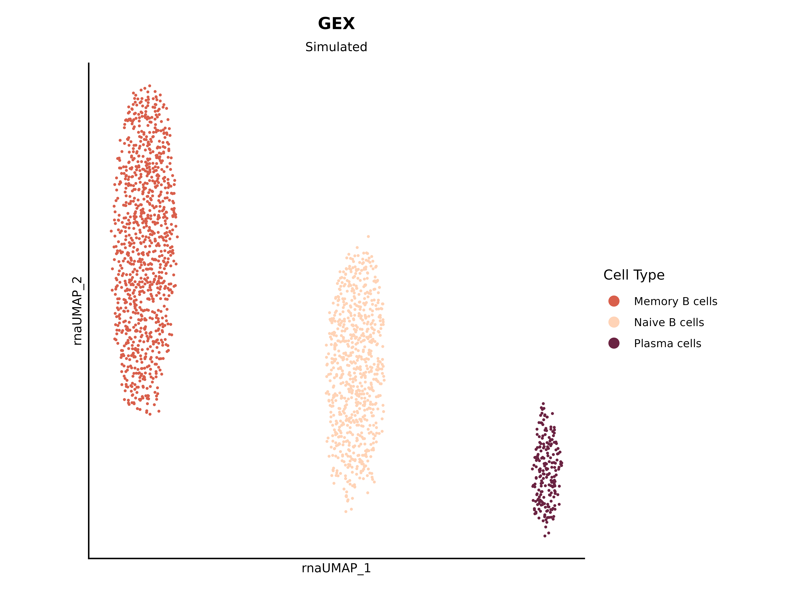
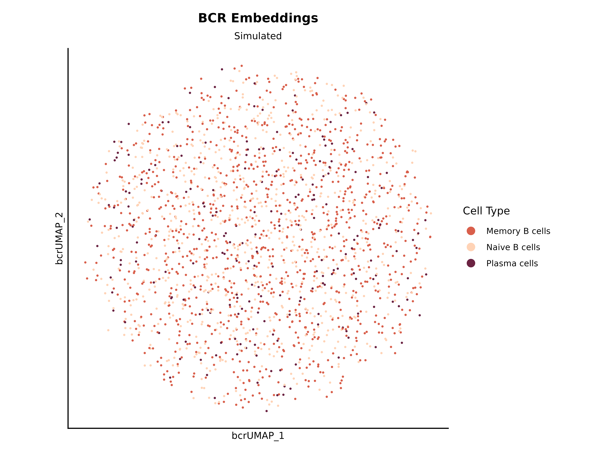
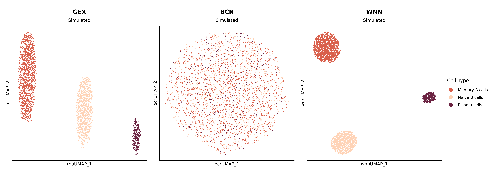
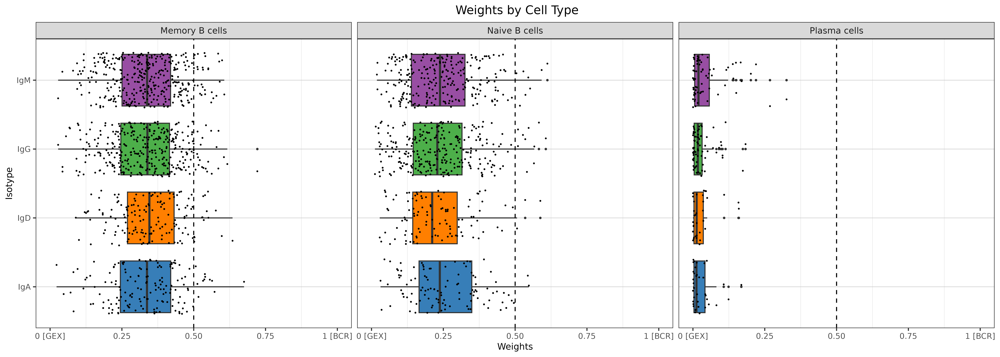
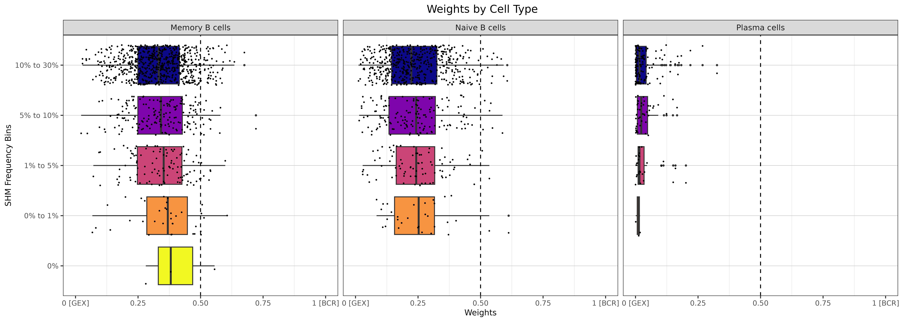
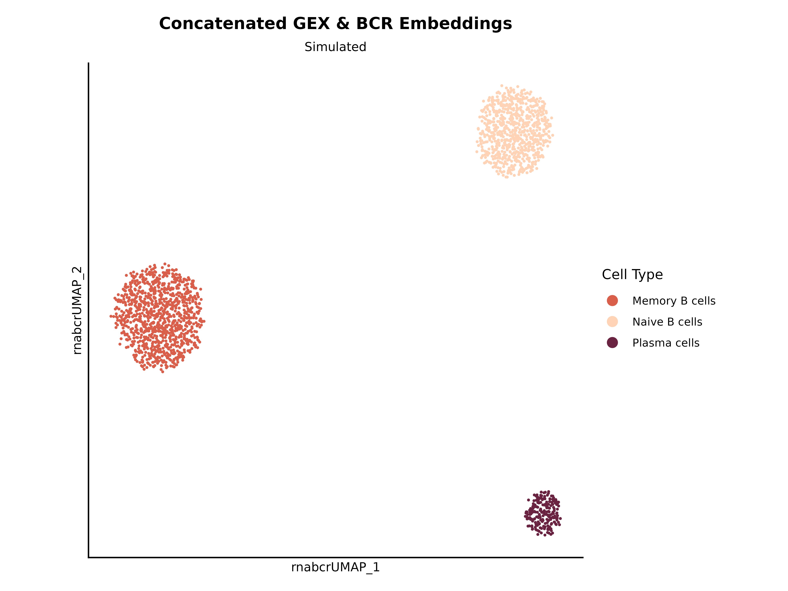
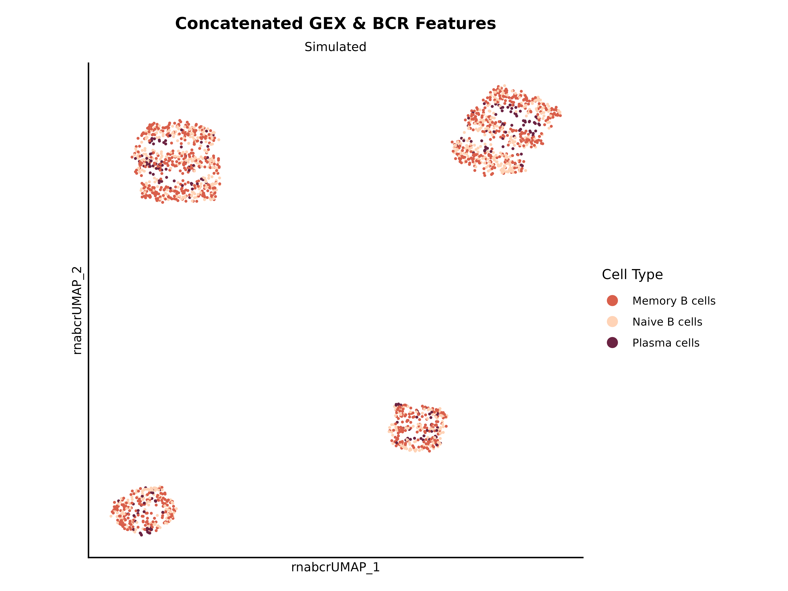

Main processing pipeline: GEX, BCR, concatenation, and WNN
Source:vignettes/main_pipeline.Rmd
main_pipeline.RmdThis vignette walks through the full athanor pipeline on
simulated data:
-
GEX processing:
seurat_pipeline()+add_annotations() - BCR metadata: adding AIRR-derived features to the Seurat object
-
WNN:
run_wnn()integrates GEX and BCR embeddings via Seurat’s Weighted Nearest Neighbors -
Concatenation:
concatenate_gex_bcr()combines gene expression and BCR embeddings or features into a single assay - Evaluation: ADT-based metrics across methods
Setup
# TODO: switch to using real data
library(athanor)
library(dplyr)
library(ggplot2)
library(Matrix)
library(patchwork)
library(recipes)
library(Seurat)
set.seed(42)1. GEX processing
Simulate and build the initial object
sim_gex_manual() generates a sparse count matrix and
wraps it in a Seurat object. It also adds a cell_id column
to the metadata, which is required downstream by
run_wnn().
We also attach a small ADT assay (in real experiments this would hold
cell surface protein counts) since its presence is expected by
run_wnn().
num_cells <- 2000
num_genes <- 500
num_proteins <- 6
num_pcs <- 50
num_dims <- 20
k <- 20
data_desc <- "Simulated"
# TODO: put the memory and naive B cells into one cluster
obj <- sim_gex_splatter(num_genes = num_genes, num_cells = num_cells,
splatter_groups = c(0.4, 0.5, 0.1),
splatter_method = "groups")
# add a small ADT assay
adt_counts <- Matrix(as.integer(rexp(num_proteins * num_cells, rate = 0.3)),
nrow = num_proteins, ncol = num_cells, sparse = TRUE)
rownames(adt_counts) <- c("CD19", "CD21", "CD27", "CD38", "IGD", "IGM")
colnames(adt_counts) <- Cells(obj)
obj[["ADT"]] <- CreateAssay5Object(counts = adt_counts)
# confirm that cell_id is present
head(obj$cell_id)
#> Cell1 Cell2 Cell3 Cell4 Cell5 Cell6
#> "Cell1" "Cell2" "Cell3" "Cell4" "Cell5" "Cell6"Run the GEX pipeline
seurat_pipeline() runs normalization, variable feature
selection, scaling, PCA, neighbor finding, and UMAP. Passing
nfeatures_RNA = 0 and perc_mt = 100 skips QC
filtering (appropriate for simulated data with no mitochondrial genes).
A higher cluster_res gives more granular clusters, which is
useful for annotation.
obj <- seurat_pipeline(seurat_obj = obj, nfeatures_RNA = 0, perc_mt = 100,
num_features = num_genes, num_pcs = num_pcs,
num_dims = num_dims, k_param = k, cluster_res = 0.5,
verbose = FALSE)
# reductions and cluster column produced
names(obj@reductions)
#> [1] "rpca" "rna.umap"
levels(obj$seurat_clusters)
#> [1] "0" "1" "2"
plot_dimplot(seurat_obj = obj, plot_title = "GEX", data_source = data_desc,
meta_col = "seurat_clusters", reduc = "rna.umap")
Annotate clusters
add_annotations() maps a data frame of
cluster-to-cell-type assignments onto the Seurat object. The data frame
must have one row per cluster in the same order as
levels(seurat_clusters).
# TODO: annotate on a cell level instead to simulate automated annotation
n_clusters <- nlevels(obj$seurat_clusters)
# one cell type label per cluster
# cell_types <- sample(c("Memory B cells", "Naive B cells", "Plasma cells",
# "Transitional B cells"), size = n_clusters,
# replace = TRUE, prob = c(0.4, 0.4, 0.1, 0.1))
# we chose to have 3 clusters during simulation, so let's define them directly
cell_types <- c("Memory B cells", "Naive B cells", "Plasma cells")
annotations_df <- data.frame(CellType = cell_types)
obj <- add_annotations(seurat_obj = obj, annotations_df = annotations_df,
cell_types_col = "CellType",
clusters_col = "seurat_clusters",
annotations_col = "annotated_clusters")
table(obj$annotated_clusters)
#>
#> Memory B cells Naive B cells Plasma cells
#> 1023 762 215
plot_dimplot(seurat_obj = obj, data_source = data_desc,
clrs_specific = named_colors$cell_types_celltypist,
plot_title = "GEX", reduc = "rna.umap",
meta_col = "annotated_clusters",
plot_label = FALSE, legend_label = "Cell Type")
2. BCR data
Embeddings
We’ll quickly simulate some BCR embeddings.
embeddings <- sim_airr_manual(num_cells = num_cells, num_dims = 256,
separator = "-")
colnames(embeddings) <- obj$cell_id # must match cell_id
# examine the results
dim(embeddings) # dimensions by cells
#> [1] 256 2000
embeddings[1:5, 1:5]
#> 5 x 5 sparse Matrix of class "dgCMatrix"
#> Cell1 Cell2 Cell3 Cell4 Cell5
#> Dim-1 -0.5109210 0.05352389 -0.5671974 -0.4843711 -0.1790951
#> Dim-2 0.5139805 -0.40801619 0.3460265 -0.4950914 0.2179880
#> Dim-3 -0.1186212 -0.32737616 -0.5715728 0.3838005 -0.2196047
#> Dim-4 0.1984502 -0.25955410 0.3020567 -0.1084960 -0.3279383
#> Dim-5 -0.5700390 -0.37497147 -0.3364119 0.5444899 0.0115477Let’s make a Seurat object out of the embeddings:
embeddings_obj <- bcr_embeddings_pipeline(embeddings = embeddings,
embedding_type = "Manual",
num_pcs = num_pcs,
num_dims = num_dims, k_param = k,
verbose = TRUE)
# just for plotting (since we set cells to be the same here)
embeddings_obj$annotated_clusters <- obj$annotated_clusters
plot_dimplot(seurat_obj = embeddings_obj, data_source = data_desc,
clrs_specific = named_colors$cell_types_celltypist,
plot_title = "BCR Embeddings",
reduc = "bcr.umap", meta_col = "annotated_clusters",
plot_label = FALSE, legend_label = "Cell Type")
Metadata
In a real experiment these columns come from
gex_add_airr() applied to an AIRR-formatted table. Here we
simulate them directly so that the downstream steps are
self-contained.
-
cdr3_aa_length= CDR3 length bucket (ordered factor)- Can also be numeric
-
isotype= BCR isotype (categorical) -
mu_freq= somatic hypermutation frequency (numeric)
obj$cdr3_aa_length <- factor(sample(c("Short", "Medium", "Long"), num_cells,
replace = TRUE),
levels = c("Short", "Medium", "Long"),
ordered = TRUE)
obj$isotype <- factor(sample(c("IgM", "IgD", "IgG", "IgA"), num_cells,
replace = TRUE,
prob = c(0.35, 0.15, 0.35, 0.15)))
obj$mu_freq <- round(runif(num_cells, min = 0, max = 0.3), 3)
obj[[]] %>%
select(mu_freq, cdr3_aa_length, isotype) %>%
summary()
#> mu_freq cdr3_aa_length isotype
#> Min. :0.0000 Short :683 IgA:303
#> 1st Qu.:0.0710 Medium:641 IgD:304
#> Median :0.1500 Long :676 IgG:697
#> Mean :0.1484 IgM:696
#> 3rd Qu.:0.2220
#> Max. :0.3000
# let's say that this object's cells all have paired BCRs too
obj$Has_BCR <- TRUE
obj$paired_light <- TRUE # TODO: test this3. WNN (Embeddings)
run_wnn() integrates two modalities via Weighted Nearest
Neighbors. It expects:
- a Seurat object with a
cell_idcolumn in the metadata - a BCR
embeddingsmatrix (features × cells) whose column names matchcell_id
You can technically also run this with BCR features but we do not recommend it.
obj_wnn <- run_wnn(seurat_obj = obj, embeddings = embeddings,
embedding_type = "Simulated",
pc_gex = 10, pc_bcr = 10, k_param = 20, cluster = TRUE,
cluster_res = list("GEX" = 0.5, "BCR" = 0.5, "WNN" = 0.5),
verbose = FALSE)
# bin the mutation frequency for plotting
obj_wnn <- bin_mu_freq(obj_wnn)
names(obj_wnn@reductions)
#> [1] "rpca" "rna.umap" "bpca" "bcr.umap" "wnn.umap"Visualization
UMAPs:
p_gex <- plot_dimplot(obj_wnn, plot_title = "GEX", data_source = data_desc,
clrs_specific = named_colors$cell_types_celltypist,
meta_col = "annotated_clusters", reduc = "rna.umap",
plot_label = FALSE, legend_label = "Cell Type")
p_bcr <- plot_dimplot(obj_wnn, plot_title = "BCR", data_source = data_desc,
clrs_specific = named_colors$cell_types_celltypist,
meta_col = "annotated_clusters", reduc = "bcr.umap",
plot_label = FALSE, legend_label = "Cell Type")
p_wnn <- plot_dimplot(obj_wnn, plot_title = "WNN", data_source = data_desc,
clrs_specific = named_colors$cell_types_celltypist,
meta_col = "annotated_clusters", reduc = "wnn.umap",
plot_label = FALSE, legend_label = "Cell Type")
# use patchwork
(p_gex + p_bcr + p_wnn) + plot_layout(nrow = 1, guides = "collect")
Modality weights:
# by isotype
plot_mws(seurat_obj = obj_wnn, second_assay = "BCR",
clrs_specific = named_colors$isotype, split_by = "isotype",
facet_by = "annotated_clusters", y_axis_label = "Isotype")
# by SHM frequency
plot_mws(seurat_obj = obj_wnn, second_assay = "BCR",
clrs_specific = named_colors$mu_freq_bins, split_by = "mu_freq_bins",
facet_by = "annotated_clusters", y_axis_label = "SHM Frequency Bins")
object_overview() prints a brief description of the
post-WNN object, including assay sizes and the number of PCs used per
modality.
object_overview(obj_wnn)4. Concatenation (Embeddings)
concatenate_gex_bcr() combines the RNA counts with
processed BCR embeddings into a new RNA_BCR assay, then
runs PCA and UMAP on the joint space.
-
stage = "raw"means that GEX genes are concatenated with the BCR embeddings -
stage = "reduced_gex"means that GEX PCs are concatenated with BCR embeddings -
stage = "reduced_both"means that GEX PCs are concatenated with BCR PCs
# TODO: remove this step
embeddings_obj$Has_BCR <- TRUE
embeddings_obj$paired_light <- TRUE
# merge the BCR embeddings into the GEX obj
gex_bcr_obj <- merge_gex_bcr(gex_obj = obj, bcr_obj = embeddings_obj,
transfer_reductions = TRUE, verbose = TRUE)
# keep a copy so run_wnn() below starts from the same object
obj_cat <- concatenate_gex_bcr(seurat_obj = gex_bcr_obj, stage = "reduced_both",
input_type = "embeddings",
gex_reduction = "rpca", num_dims = num_dims)
# new assay and reductions
names(obj_cat@assays)
#> [1] "RNA" "ADT" "BCR"
names(obj_cat@reductions)
#> [1] "rpca" "rna.umap" "bpca" "bcr.umap" "rna_bcr.pca"
#> [6] "rna_bcr.umap"
plot_dimplot(seurat_obj = obj_cat, data_source = data_desc,
clrs_specific = named_colors$cell_types_celltypist,
plot_title = "Concatenated GEX & BCR Embeddings",
reduc = "rna_bcr.umap", meta_col = "annotated_clusters",
plot_label = FALSE, legend_label = "Cell Type")
object_overview(obj_cat)5. Concatenation (Features)
concatenate_gex_bcr() combines the RNA counts with
processed BCR feature columns into a new RNA_BCR assay,
then runs PCA and UMAP on the joint space.
-
stage = "raw"means that GEX genes are concatenated with the BCR features -
stage = "reduced_gex"means that GEX PCs are concatenated with BCR features -
stage = "reduced_both"means that GEX PCs are concatenated with BCR PCs- This is not recommended as BCR features already tends to be a short list, so PCs are not informative
cols_to_include lists the BCR metadata columns to pull
into the assay. Internally, process_bcr_features()
normalizes numeric columns, converts ordered factors to ordinal scores,
and one-hot encodes categoricals.
# keep a copy so run_wnn() below starts from the same object
obj_cat <- concatenate_gex_bcr(seurat_obj = obj, stage = "reduced_gex",
input_type = "features",
cols_to_include =
c("cdr3_aa_length", "isotype", "mu_freq"),
num_dims = num_dims)
# new assay and reductions
names(obj_cat@assays)
#> [1] "RNA" "ADT" "RNA_BCR"
names(obj_cat@reductions)
#> [1] "rpca" "rna.umap" "rna_bcr.pca" "rna_bcr.umap"
plot_dimplot(seurat_obj = obj_cat, data_source = data_desc,
clrs_specific = named_colors$cell_types_celltypist,
plot_title = "Concatenated GEX & BCR Features", reduc = "rna_bcr.umap",
meta_col = "annotated_clusters",
plot_label = FALSE, legend_label = "Cell Type")
object_overview(obj_cat)Summary of the pipeline
| Step | Function | Key output(s) |
|---|---|---|
| GEX simulation | sim_gex_manual() |
Seurat object with cell_id
|
| GEX pipeline | seurat_pipeline() |
RNA assay, rpca, rna.umap,
seurat_clusters
|
| BCR simulation | sim_bcr_manual() |
Matrix of embedding values |
| BCR pipeline | bcr_embeddings_pipeline() |
BCR assay, bpca,
bcr.umap
|
| Annotation | add_annotations() |
annotated_clusters in metadata |
| Addition of BCR features | gex_add_airr() |
BCR columns in object metadata |
| Weighted nearest neighbors | run_wnn() |
wnn.umap |
| Concatenation | concatenate_gex_bcr() |
RNA_BCR assay, rna_bcr.pca,
rna_bcr.umap
|
| Description | object_overview() |
printed summary |